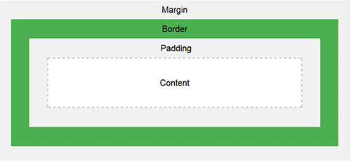

Boksmodellen

Alle HTML-elementer kan betraktes som bokser. I CSS brukes begrepet "boksmodell" når vi snakker om design og layout. CSS-boksmodellen er egentlig en boks som bryter rundt hvert HTML-element. Den består av Padding, Margin, Border og Content.
PADDING
På en knapp så virker det som om teksten neste ikke får plass på knappen i det hele tatt. Dette handler om padding - at man angir hvor mye luft det skal være mellom f. eks. tekst og en ramme.
MARGIN
Margin er luft mellom forskjellige bokser
BORDER
Border er som en slags marg/stroke rundt en boks
SELECTOR - CSS
Selector er
ATTRIBUTE - CSS
Attribute er
VALUE - CSS
Value er
P - TAGGEN
P-taggen er definisjonen på paragraph, eller mengdetekst. Akuratt slik som denne teksten du leser her.
H1 - TAGGEN
H1 er definisjonen på en hovedoverskrift, slik som den over disse boksene.
KOMMENTAR I HTML
i HTML kan du dokumentere og kommentere. Det gjør du ved å bruke ett (krokodilletegn) + ! kommentar og avslutt med (krokodilletegn)
KOMMENTAR I CSS
i CSS kan man kommentere. Det gjøres ved å starte med /* og avslutte med */. Legg merke til at det ikke er alle steder du kan kommentere. Det må ligge i området hvor du definerer CSS
SKRIVE LENKER
(krokkodille tegn) a href=""(krokodille tegn)(krokkodille tegn)/a(krokodille tegn)
LEGGE TIL BILDE
Pass på å legge bildet du vil legge inn i mappen som html-filen ligger i. I HTML-filen skriver du «img», og trykker enter. I første «» skriver du ./ og velger bildet du skal sette inn fra mappen. I den andre «» skriver du en beskrivelse på bildet. Dette brukes til opplesning av nettsiden for svaksynte.
LEGGE TIL BAKGRUNNSFARGE
Velg hvilke element du vil ha bakgrunnsfarge på.
Dette kan være en paragraf, en boks, eller hele
nettsiden. I style eller CSS-delen av HTML-filen setter du
deretter inn
MAIN - HTML
Hva brukes main i HTML til? Main i HTML brukes til selve hovedinnholdet, slik som område der disse boksene er plassert.
FARGE MED HEX VERDI
Skriv # og en sekssifret kombinasjon av bokstaver (a-f) og tall (0-9). 0 er mørkest og f er lysest. Da er f.eks #ffffff hvit, #000000 svart, #ffcc00 en varm gul farge og #bfe6ff en lyseblå farge.
FARGE MED rgb-VERDI
Skriv rgb og verdien av rød, grønn og blå du vil bruke. F.eks rgb(255, 26, 00) til å få en rød farge, rgb(139, 49, 255) for en lilla farge og rgb(255, 239, 0) for gul.
FLEXBOX - CSS
Flexbox brukes når du skal designe layout til en nettside. Innholdet blir da mer fleksibelt og flytter på seg automatisk i forhold til skjermstørrelsen.